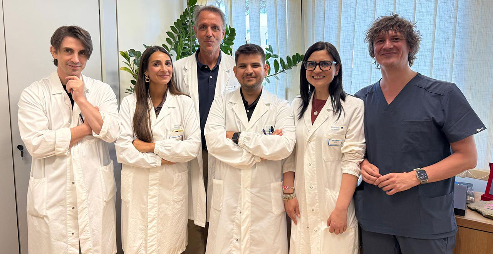

Springer Nature Recognizes Stefano Cacciatore for Editorial Contributions
Springer Nature recognized Cacciatore’s editorial service to BMC Geriatrics for the second consecutive year.
Read more →News
Selected awards, publications, talks, and academic activities.
Springer Nature recognized Cacciatore’s editorial service to BMC Geriatrics for the second consecutive year.
Read more →
Cacciatore presented work on sensory function, mobility, cognition, and intrinsic capacity at the international meeting in Padua, Italy.
Read more →
The Institute welcomed Cacciatore as a visiting researcher supported by the Ermenegildo Zegna Founder’s Scholarship.
Read more →
A study on Mediterranean diet adherence and probable sarcopenia in older adults was recognized with the journal’s Best Paper Award.
Read more →